Chapter 4: Creating a Die Button Prefab
{: .no_toc } If you completed the challenge at the end of Chapter 3: Adding an OnRoll Event, you may have felt that “wiring” up all the labels, controllers, and buttons was incredibly tedious. If you decide to make changes to the buttons in the future, it will be painful to update all of them again. In this section, we will learn how to create a Prefab for a Die Button to manage the complexity of adding new buttons and updating existing buttons.
Before starting this section, you should complete Chapter 3: Adding an OnRoll Event as well as the challenge at the end.
When you’re ready, your scene should look and act similar to this:
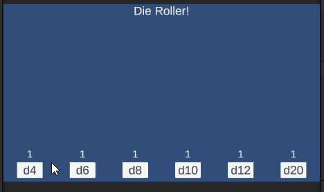
Table of contents
- Chapter 4: Creating a Die Button Prefab
- 01. Creating a Die Button Prefab
- 02. Creating a DieButton Script
- 03. Requiring a DieController
- 04. Add Listeners to the Button and Die Controller
- 05. Adding Prefabs to the Scene
- 06. Adding a ButtonLabel property to a DieButton
- Good Time to Commit
- Challenge: Add an OnLabelChange Event to the Die Button Prefab
- Challenge: Add the Remaining DieButton Prefabs to the Scene
- Good Time to Merge
- What’s Next
01. Creating a Die Button Prefab
In programming, we consider copy/paste coding a “code-smell”. It is indicative that we should refactor our code to use a method, class, or loop to reuse existing code and manage the complexity.
The same thing can be said about performing the same work over and over in the Unity editor / inspector. When this happens, it is usually a sign that we should find a way to manage the complexity. In this case, we will use a Prefab to manage the complexity of a Die Button.
The word Prefab is short for Prefabrication. Essentially, it is a “blueprint” for a GameObject we would like to add to a Scene. If we update the Prefab it will update all of the GameObjects throughout the project that use it.
Create a Folder for Prefabs
As always, we want to manage the complexity of our project. Let’s start by creating a place to store our prefabs.
- Navigate to the
Assetsfolder - Right click
- Select
Create>Folder - Rename the folder
Prefabs
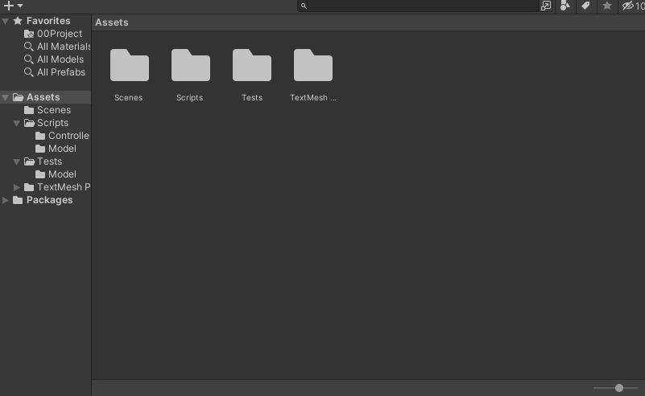
Create a Prefab from an Existing GameObject
Our d4 Group will serve as the initial template for our Prefab. To turn an existing object into a Prefab you can drag it into a folder within the Project panel.
- Open the
Prefabsfolder - Drag the
d4 Groupfrom theHierarchyinto thePrefabsfolder - Rename it to
Die Button
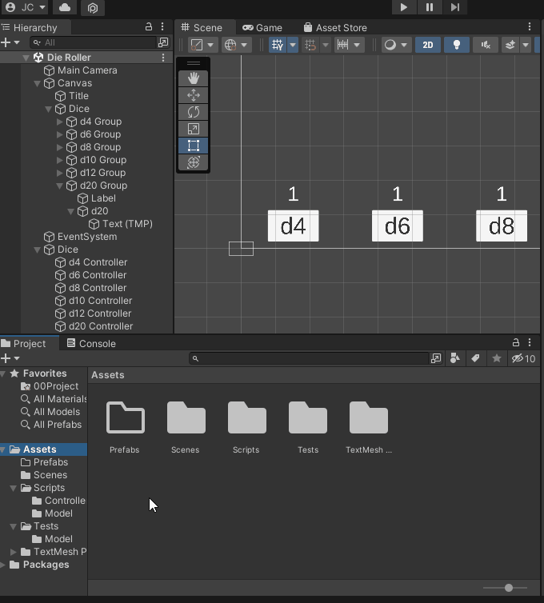
If all went well, the d4 Group in the Hierarchy should be blue. This tells us that this GameObject is a Prefab.
- Double click on the
Die Buttonprefab in theProjectpanel to open it
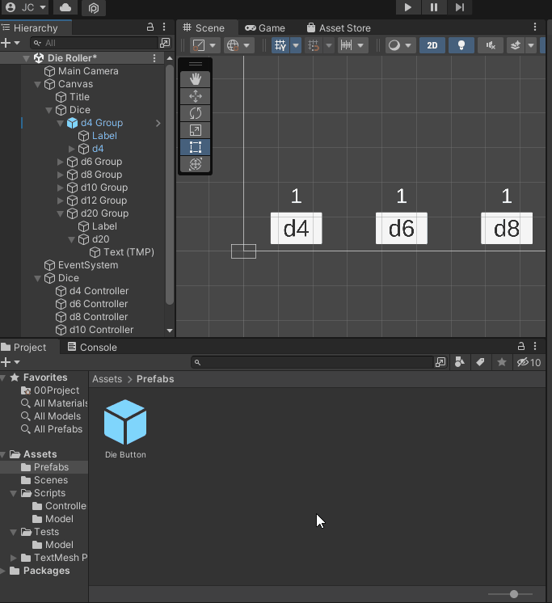
02. Creating a DieButton Script
Our goal is to make the Die Button completely self contained. That is, all of the functionality should be encapsulated with a few control options in the Inspector that will allow it to be customized when added to a Scene. Currently, it is dependent on the d4 Controller within the Scene.
To do this, we will create a new C# Script called DieButton which will have allow us to expose values to the Inspector.
Because the DieButton will be part of the User Interface, we will create a new folder in our scripts directory for it.
- Navigate to the
Scriptsfolder - Create a new folder
UI - Within the
UIfolder - Create a new
C# ScriptcalledDieButton - Double click to open the
DieButtonscript
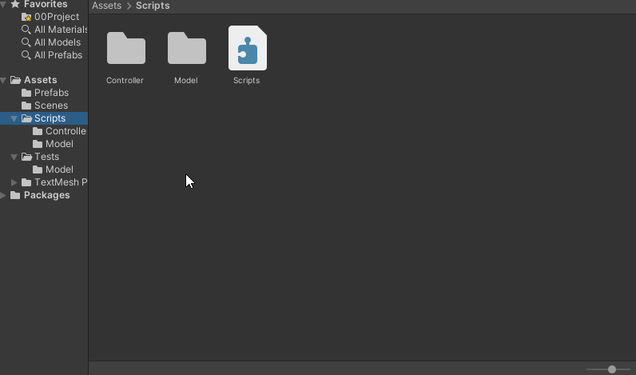
- The
DieButtonacts as aUIelement in our project so we will add it to theAdventureQuest.UIname space.
- Update your
DieButtonclass to be in theAdventureQuest.UIname space. - We won’t need the
Updatemethod so remove it from the generated template
Note: We will use the Start method to initialize the Prefab so you can leave it
using UnityEngine;
namespace AdventureQuest.UI
{
public class DieButton : MonoBehaviour
{
void Start()
{
}
}
}
03. Requiring a DieController
A DieButton must be connected to a DieController. To enforce this, we can use the RequireComponent attribute.
- Update the
DieButton.csfile to use theAdventureQuest.Dicename space- This allows access to the
DieControllerclass
- This allows access to the
- Add the
[RequireComponent(typeof(DieController))]attribute to theDieButtonclass
using UnityEngine;
using AdventureQuest.Dice; // <-- Required to use DieController
namespace AdventureQuest.UI
{
[RequireComponent(typeof(DieController))] // <-- Enforces that a DieController is available
public class DieButton : MonoBehaviour { // omitted for brevity }
}
Next, add the DieButton script to the DieButton Prefab.
- Select
Die Buttonin theHierarchy- Be sure you are editing the
Prefab
- Be sure you are editing the
- In the
InspectorselectAdd Component - Search for
DieButton - Add the Component
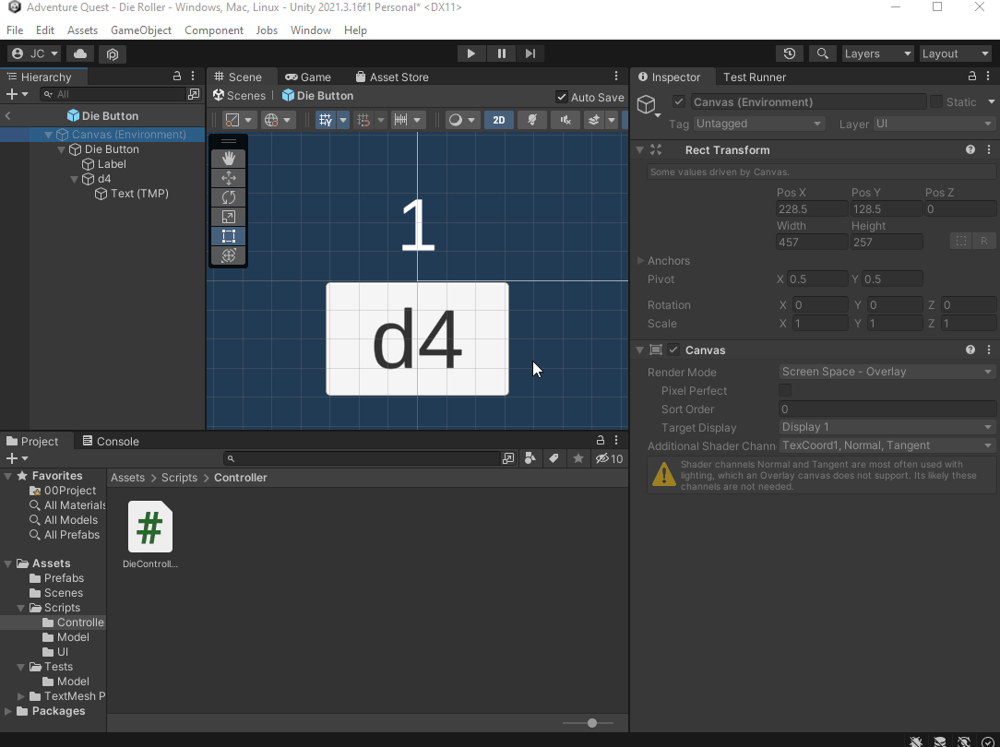
Notice: By adding the DieButton script, it automagically added the DieController script as well! This is because the DieButton script enforces that the GameObject it is attached to must have a DieController.
04. Add Listeners to the Button and Die Controller
Now that we have a Die Controller, we can register it on the Die Button’s Button listener.
- First, rename the
d4element to beButton
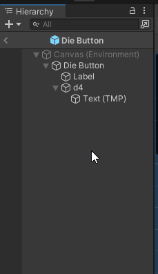
Our Die Button Prefab won’t always have a d4 so it doesn’t make sense to have a child component called d4.
Next, register the DieController’s Roll() method on the Button’s OnClick event.
- Select
Buttonfrom theHierarchy - In the
Inspectorfind theButtoncomponent - Find the
On Clicklistener - Drag the
Die Buttoninto theNone (Object)space
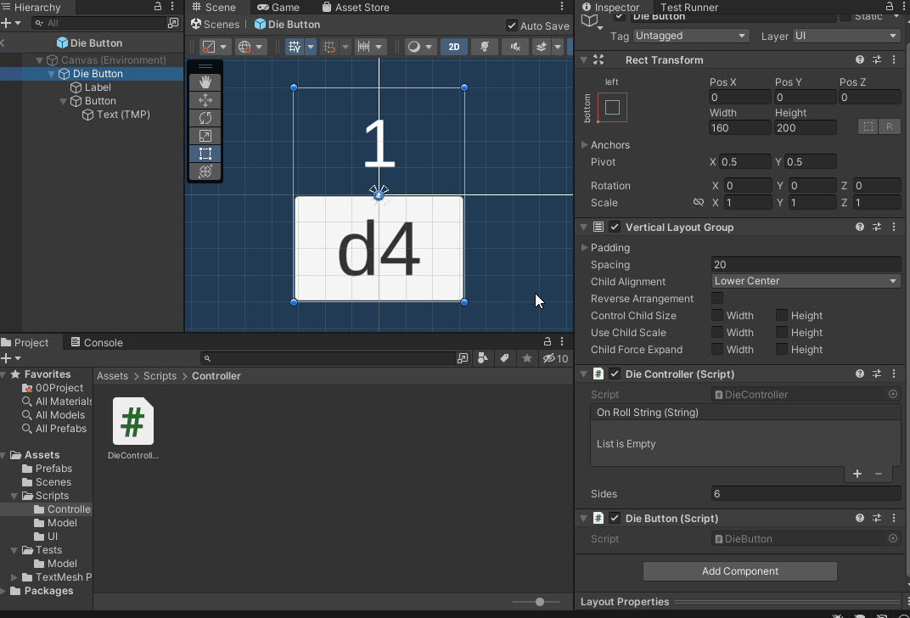
- Select the function drop down on the
Die Buttonlistener - Select
DieController>Roll()
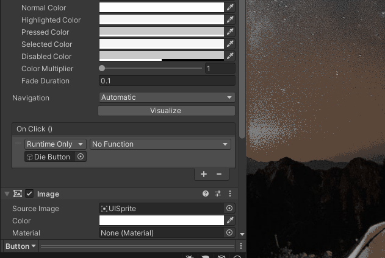
Finally, we must register the Label on the DieController’s OnRollString event.
- Select
Die Buttonin theHierarchy - In the
Inspectorfind theDieControllercomponent - Add a listener to the
OnRollStringby clicking the+button - Drag
Labelfrom theHierarchyonto theObject (None)field
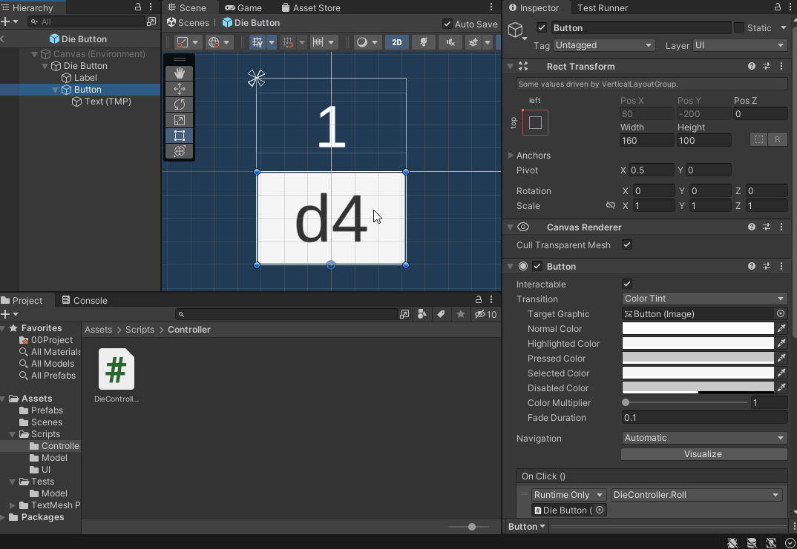
- Select the function drop down on the listener
- Select
TextMeshPro>text
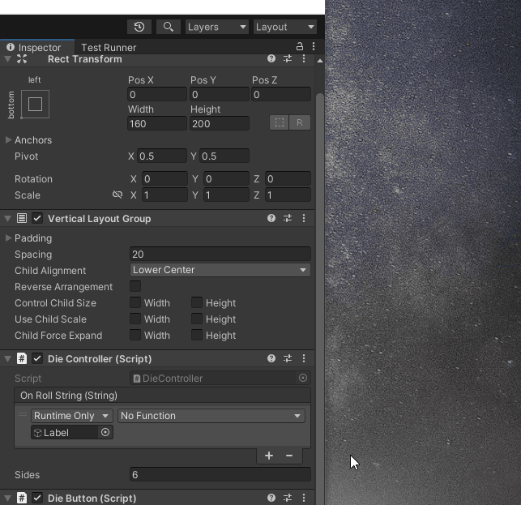
Test the Die Button in the Die Roller Scene
Before continuing, test that the DieButton Prefab is working as expected.
- Return to the
Sceneby clicking the<button near the top of the Hierarchy` panel.
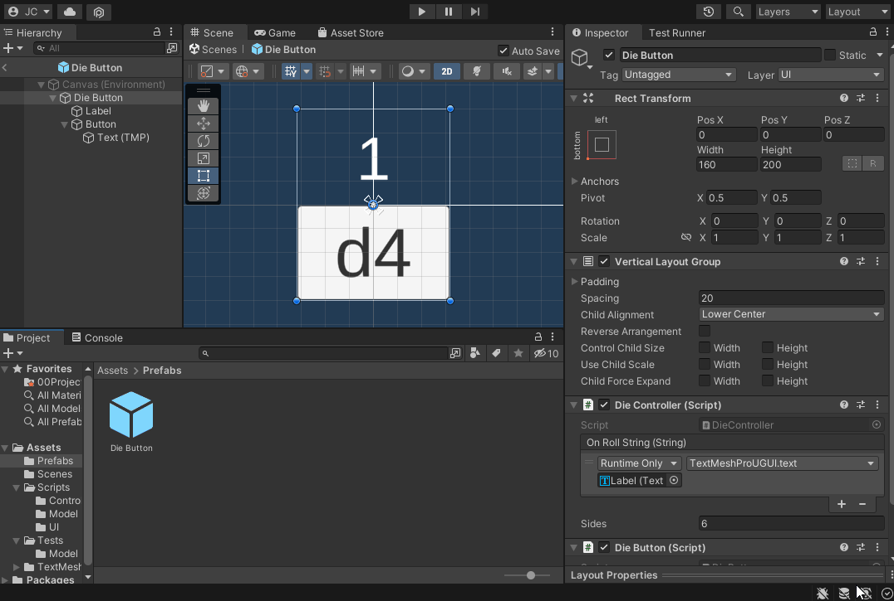
Notice: The d4 Group GameObject in the Hierarchy has “automagically” been updated to reflect the changes made in the Die Button Prefab
- Select
d4 Groupin theHierarchy - Find the
Die Controllercomponent in theInspector - Set
Sidesto4
Notice: After modifying a Prefab a small blue line appears on the left of the Inspector next to the field. This indicates that this value has been modified on this Prefab and won’t be changed if the Prefab is modified.
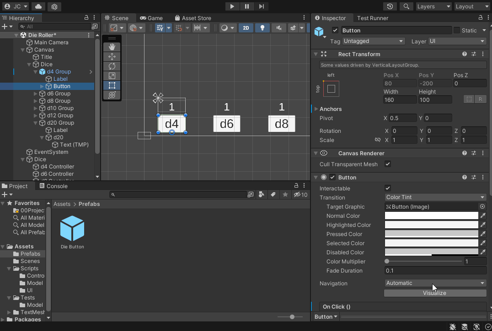
- Run the scene and verify that the
d4button updates properly.
05. Adding Prefabs to the Scene
Next, let’s replace each of the button groups with an instance of our Die Button prefab.
- Delete each of the non-prefab button groups from the scene.
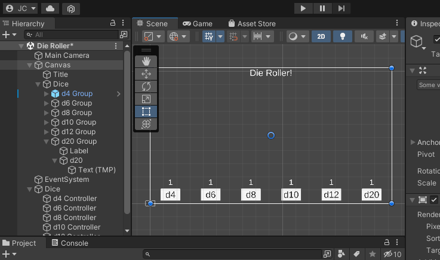
- Drag the
Die ButtonPrefabfrom theProjectpanel into theDicegroup in theHierarchy - Rename the object to
d6 Button
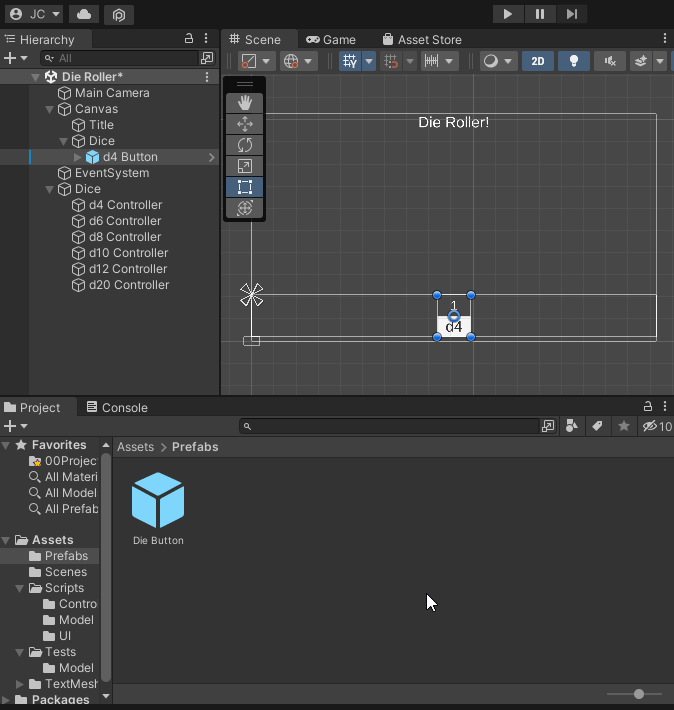
Notice, the label of the button still says d4. We could edit the label in the Scene for each of our buttons. This would require us to be change a child component of the Prefab. Typically, we want all of the options of a prefab to be accessible from the Prefabs root object.
06. Adding a ButtonLabel property to a DieButton
- Update the
DieButtonclass to have astringproperty namedButtonLabel- The property should be
public, provide aget, and have aprivate set. - Initialize the property to be
string.Empty
- The property should be
- Add the
[field: SerializeField]attribute to the property to expose it to theInspector
public class DieButton : MonoBehaviour
{
[field: SerializeField]
public string ButtonLabel { get; private set; } = string.Empty;
void Start()
{
}
}
When the DieButton starts, we will check to see if the ButtonLabel has been set in the Inspector. If it has not been set. We will initialize it to be d{Sides} using the DieControllers value. This gives the user flexibility to set the ButtonLabel OR use a default value.
Because we have enforced that a DieButton requires a DieController using the RequireComponent attribute. We can use the GetComponent<DieController>() method to access the DieController.
- Update the
Start()method to check ifButtonLabel == string.Empty - If it is
string.EmptysetButtonLabelto be $”d{sides}”.- Use
GetComponent<DieController>().Sidesto get the number of sides.
- Use
void Start()
{
if (ButtonLabel == string.Empty)
{
DieController dieController = GetComponent<DieController>();
int sides = dieController.Sides;
ButtonLabel = $"d{sides}";
}
}
Test it in the Scene
Before continuing, verify that the ButtonLabel field is visible in the Inspector and that when you run the Scene the field is updated to match the expected value.
Note: The label on the button will not update just yet.
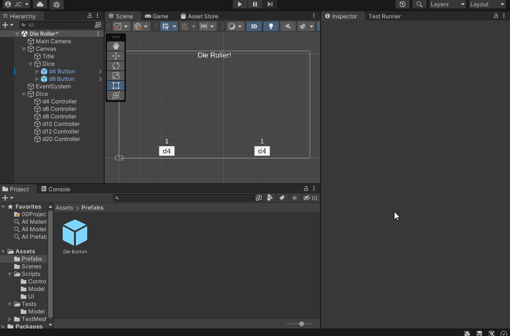
Good Time to Commit
Now would be a good time to make a git commit. Since you have not yet finished a feature, this would be a work-in-progress commit . More specifically, you just added a Die Button Prefab. Before committing, be sure you save your Die Roller scene (Unity doesn’t auto save for you).
Committing with GitHub Desktop (Click to Expand)
- Ensure the files you would like to commit are checked in the
Changestab.

-
Enter a summary for your commit. Think of this as the subject line of an email. It should be SHORT and to the point. Aim to be less than 50 characters. It is good practice to prefix the commit with the type of work that was done. For example:
- A feature:
feat: Implemented Die class - A chore:
chore: Added image assets to project - A bug fix:
fix: Removed off by 1 error - A work in progress:
wip: Partial implementation of DieGroup class
- A feature:
-
Add a description to your commit. This should provide additional details about what is included in the commit. For example:
This commit adds a Die class which models a multi-sided die providing an
interface with 2 properties: `Sides` and `LastRolled`. Additionally, it provides
a single method: `Roll()` which "rolls" the die and randomly selecting one of
the sides.
Additionally, added unit tests to test the Die class specification.
- When you’re ready, click the
Commitbutton

- Lastly, push your commit to GitHub by clicking the
Push originbutton

Challenge: Add an OnLabelChange Event to the Die Button Prefab
Alright! You’re almost there. All that is left is to update the Button’s text when the DieButton starts: To do this, you will:
- Add a
UnityEvent<string> OnLabelChangeproperty- Follow good practices with a
private set - Expose it to the
Inspectorusing the[field: SerializeField]attribute - You will need to use the
UnityEngine.Eventsname space to access theUnityEventclass.
- Follow good practices with a
- Update the
Start()method to callOnLabelChange.Invoke(ButtonLabel)- This should happen after the label has been initialized
- This should always happen exactly once (even if the label wasn’t set)
- Update the
Button’sTextcomponent to default tod?? - Register the
Button’sTextcomponent to listen to theOnLabelChangeevent- When it occurs, the
TextMeshPro’stextproperty should update
- When it occurs, the
Hint: In Chapter 3, we added an OnRollString event to the DieController. You should be able to apply the same steps here.
When you’ve finished the DieButton component should look like this:
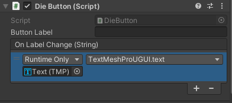
Additionally, when you run the Die Roller Scene, the button labels should “automagically” update.
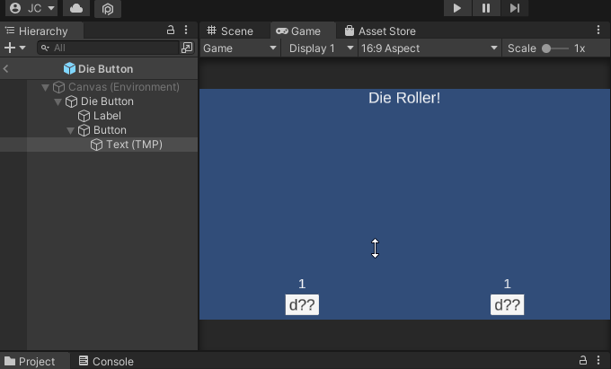
Challenge: Add the Remaining DieButton Prefabs to the Scene
Now that you have a nice Die Button Prefab, you can delete all of the DieControllers from the Die Roller Scene and add Die Button Prefabs in their place.
- Delete the
Dicegroup containing your previousDieControllers - Add
Die ButtonPrefabs for the remaining dice.
When you’re finished, your scene should look and act like this:
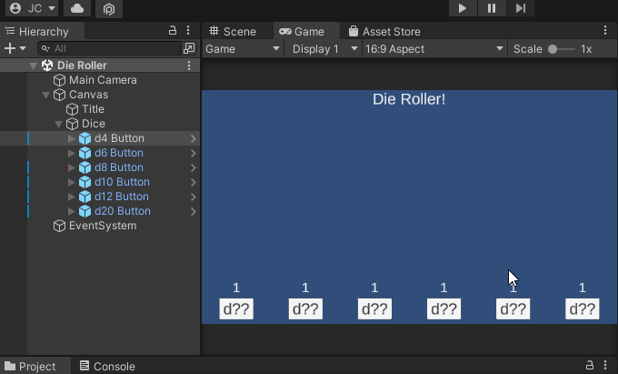
Good Time to Merge
Now would be a good time to make a git commit and merge into development. You have just finished a feature. More specifically, you have implemented a Die Roller Scene.
Committing with GitHub Desktop (Click to Expand)
- Ensure the files you would like to commit are checked in the
Changestab.
-
Enter a summary for your commit. Think of this as the subject line of an email. It should be SHORT and to the point. Aim to be less than 50 characters. It is good practice to prefix the commit with the type of work that was done. For example:
- A feature:
feat: Implemented Die class - A chore:
chore: Added image assets to project - A bug fix:
fix: Removed off by 1 error - A work in progress:
wip: Partial implementation of DieGroup class
- A feature:
-
Add a description to your commit. This should provide additional details about what is included in the commit. For example:
This commit adds a Die class which models a multi-sided die providing an
interface with 2 properties: `Sides` and `LastRolled`. Additionally, it provides
a single method: `Roll()` which "rolls" the die and randomly selecting one of
the sides.
Additionally, added unit tests to test the Die class specification.
- When you’re ready, click the
Commitbutton
- Lastly, push your commit to GitHub by clicking the
Push originbutton
Merging with GitHub Desktop (Click to Expand)
On a team, you would typically create a Pull Request into your development branch and request a code review. After the review is complete, you would merge your changes into the development branch and delete your feature branch.
If you are working on a project alone, there is no reason to create a Pull Request. Instead, you can merge directly into your development branch.
- Ensure you are on the
developmentbranch. - Click the
Fetchbutton to ensure you’re synced with GitHub - Ensure that you have
No local changes(you may need to push first)
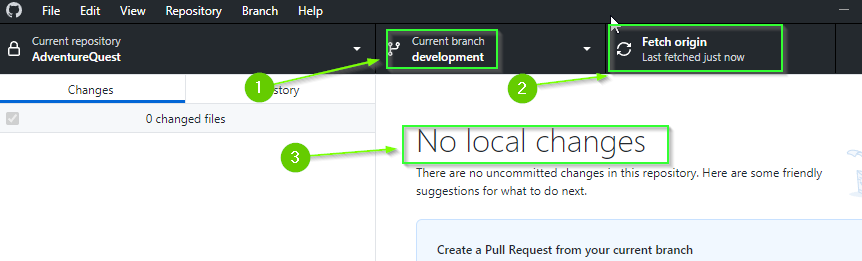
Although it isn’t absolutely necessary for there to be No local changes, you will save yourself a lot of potential pain by ensuring you’re not merging into a “dirty” state.
- From the top menu select
Branch>Merge into current branch...
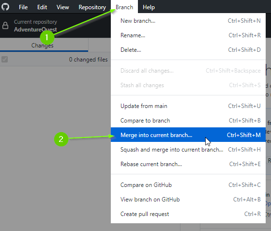
- Select your feature branch
- Click
Create a merge commit
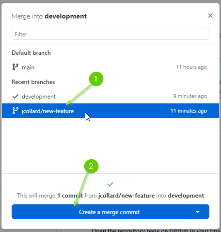
In a team, you will often make a Squash and merge commit which takes all of the commits from your feature branch and reduces it to a single commit. When you have multiple devs, this can help reduce clutter in the commit history.
- Push your changes to GitHub
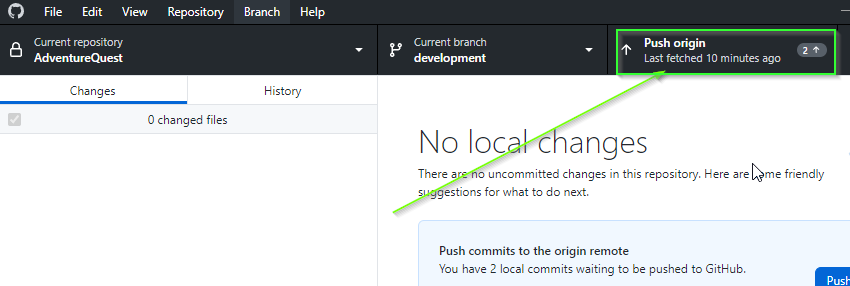
Finally, we can delete the feature branch.
- Switch to your feature branch.
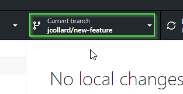
MAKE SURE YOU ARE ON YOUR FEATURE BRANCH. DELETING THE BRANCH IS PERMANENT! DO NOT DELETE THE development BRANCH
- From the top menu select
Branch>Delete
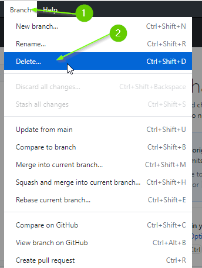
- Ensure you are deleting the correct branch (you can’t undo this!)
- Select,
Yes, delete this branch on the remote(this will delete it on GitHub too) - Click
Delete
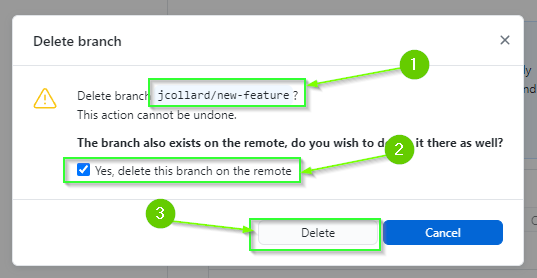
- Lastly, if necessary, switch back to your
developmentbranch to continue working.
What’s Next
Congratulations! You’ve completed Part 1: Creating a Die Roller!
In Part 2 you will create a DicePool class that allows for complex combinations of dice to be rolled together. For example, a weapon might deal damage equal to the result of rolling 2 six-sided dice and 3 four-sided dice. In table top RPG lingo this would be 2d6 + 3d4.
Additionally, in Part 2 you will create a Roll Analysis tool to explore the probability of the outcomes that rolling a DicePool could produce. For example with 2d6 + 3d4 we know the minimum is 5 (5 dice total) and the maximum is 24 (26 + 34) but what are the odds of rolling a 12?
When you’re ready, continue to Part 5: Modeling a Dice Group
Join the Discussion
If you're stuck, have questions, or want to provide feedback, you can do so below. However, I ask that you please refrain from posting complete solutions to any of the challenges.
Before commenting, you will need to authorize giscus. Alternatively, you can add a comment directly on the GitHub Discussion Board.